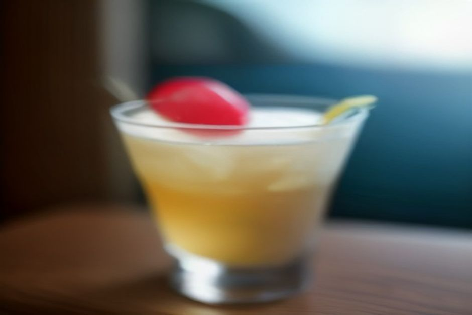
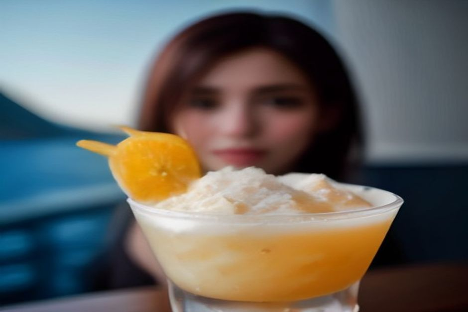

Sie haben auf Madeira den Namen „Nikita“ auf einer Getränkekarte gesehen und fragen sich, ob das ein Cocktail, ein Eisbecher oder beides ist? Beides, trifft es ziemlich gut. Der Nikita-Drink ist eine dicke, süße Mischung aus Ananas, Vanilleeis und hellem Bier, 1985 in Câmara de Lobos erfunden und nach einem Lied von Elton John benannt. Hier lesen Sie, was im Glas steckt, wie stark er wirklich ist und wo Sie ihn am besten probieren.
Nikita in Kürze: Was Sie wissen sollten
- Was: ein gemixtes Getränk aus Ananas (meist Saft), Vanilleeis und hellem Lagerbier, manchmal mit einem Schuss Weißwein.
- Geschmack: süß, kalt, cremig, eher Milchshake als Cocktail.
- Herkunft: Câmara de Lobos, 1985, im Radio lief gerade Elton Johns „Nikita“.
- Alkohol: in der klassischen Version ja, aber mild. Die meisten Bars bieten auch eine alkoholfreie Variante an.
- Wo: am schönsten an der Hafenpromenade von Câmara de Lobos, außerdem in Funchal.
Was steckt im Nikita-Getränk?
Drei Dinge machen das Getränk aus: Ananas, Vanilleeis und ein helles Bier. Die Ananas kommt meist als Saft ins Glas, manche Bars nehmen zusätzlich Ananaseis. Alles wird gemixt, bis es dick, schaumig und blassgolden ist. Einige Lokale geben statt des Biers oder zusätzlich einen Schuss Weißwein dazu.
Wenn Sie sich etwas darunter vorstellen möchten: Denken Sie an einen Milchshake mit Eisbecher-Charakter, bei dem das Bier die Rolle übernimmt, die in einer Piña Colada der Rum spielt. Er schmeckt süß und kalt und geht an einem warmen Nachmittag erstaunlich leicht runter. Man trinkt ihn eher wie ein Dessert, mit dem Strohhalm, und nicht in kleinen Schlucken wie einen Aperitif.

Ist der Nikita alkoholisch? Und für wen ist er geeignet?
Die traditionelle Version enthält Alkohol, wirkt aber sanft. Bier und eventuell Wein werden von einer großzügigen Kugel Eis und einer ordentlichen Portion Ananassaft so verdünnt, dass der Drink deutlich weicher schmeckt, als man es von den Zutaten erwarten würde. Genau deshalb sollten Sie ihn nicht unterschätzen: Man spürt ihn weniger, als man denkt.
Wer nicht trinken möchte oder noch fahren muss, hat Auswahl. Die meisten Bars in Câmara de Lobos und Funchal führen eine alkoholfreie Version, in der ein Softdrink oder mehr Saft das Bier ersetzt. Deshalb sehen Sie auf Madeira Familien mit Kindern genauso oft einen Nikita trinken wie Urlauber am Nachmittag. Fragen Sie bei der Bestellung einfach nach der Version „sem álcool“, also ohne Alkohol.
Die Geschichte: Ein Barkeeper, ein Radio, ein Lied
Der Nikita ist jung, und das gehört zu seinem Charme. 1985 stand ein Barkeeper namens Marcelino in einer kleinen Bar an der Hafenpromenade von Câmara de Lobos. Er war, so erzählt man, gerade aus Brasilien zurückgekehrt und tüftelte an etwas zwischen einer Batida und einer Piña Colada. Er mixte Ananas, Eis und Bier, und im Radio lief Elton Johns Single „Nikita“. Der Name blieb hängen.
Die Bar hieß damals Farol Verde. Sie steht noch heute und trägt den Namen A Casa do Farol. Über der Tür steht „The Original Nikita Since 1985“.
Ein Getränk, erfunden, weil im Radio gerade ein Lied lief: Viel madeirischer kann eine Entstehungsgeschichte kaum sein.
Nikita Madeira: Wo probieren Sie ihn am besten?
Am besten dort, wo er herkommt. Die Bars am Hafen von Câmara de Lobos liegen in Sichtweite der Fischerboote, und mehrere servieren ihre eigene Version. Wessen Rezept dem Original von Marcelino am nächsten kommt, darüber streiten die Einheimischen gern. Als Besucher können Sie das ganz entspannt selbst herausfinden.
Auch in Funchal werden Sie fündig: In der Zona Velha und an der Lido-Promenade steht der Nikita auf den Karten der meisten Bars. Serviert wird er meist in einem hohen Glas mit Strohhalm und Papierschirmchen.
Warum gerade Câmara de Lobos einen Besuch lohnt
Der Nikita ist nicht der einzige Grund für einen Halt dort. Câmara de Lobos ist Madeiras bekanntestes Fischerdorf. Hier soll João Gonçalves Zarco 1419 zum ersten Mal geankert haben, und Winston Churchill hat hier die bunten Boote gemalt. Der Drink hat dem Dorf einfach einen zweiten, süßeren Anlass gegeben.
Nikita oder Poncha: Was probieren Sie zuerst?
Beide sind madeirische Originale, aber sie treffen unterschiedliche Stimmungen. Der Poncha ist der schärfere, hochprozentigere Klassiker: Zuckerrohrrum, mit Honig und Zitrusfrüchten geschlagen, bis er schäumt. Für manche Erstbesucher ist das ein Geschmack, an den man sich erst gewöhnen muss.
Der Nikita ist der leichtere Einstieg. Er ist kalt, süß und näher am Dessert als am Drink. Das ist wohl der Grund, warum viele Gäste ihn am Ende lieber mögen. Unser Vorschlag: Poncha für das Ritual, Nikita für den Nachmittag. Dann haben Sie beide Seiten von Madeiras Trinkkultur auf einer Reise abgedeckt.
Wann und wie planen Sie den Nikita in Ihren Tag ein?
Ein Nikita ist ein Nachmittagsgetränk: kalt, süß und ziemlich sättigend. Vor einem Mittagessen sollten Sie ihn eher nicht trinken, und nach einer langen Wanderung oder einem Strandtag schmeckt er am besten. Bedenken Sie auch, dass er wie ein Dessert wirkt. Ein Glas pro Person reicht in der Regel völlig.
Für Câmara de Lobos brauchen Sie keine große Planung. Das Dorf liegt westlich von Funchal, die Bars liegen am Hafen, und Sie können einfach spontan einkehren. Genaue Preise nennen wir hier bewusst nicht, sie unterscheiden sich von Bar zu Bar. Ein Blick auf die Karte vor dem Bestellen lohnt sich.
Câmara de Lobos vom Wasser aus: der Nikita als Auftakt oder Abschluss
Wenn Sie Câmara de Lobos nicht nur zu Fuß, sondern vom Meer aus sehen möchten: Es ist die erste Station unserer Tagestour. Der Nikita selbst ist ein Landgenuss. Planen Sie ihn deshalb vor dem Ablegen oder nach der Rückkehr an Land ein.
Chifbay ist ein privates Bootsunternehmen in Funchal. Das Boot gehört nur Ihrer Gruppe (bis zu 5 Gäste), mit zwei lizenzierten Skippern von Madeira auf einer Karnic R8S von 2026. Treffpunkt ist die Marina do Funchal, Ponton C.
- Tagestour: Abfahrt um 10:00 oder 14:00 Uhr. Nach Ribeira Brava dauert sie 2 Std. 30 Min. und kostet 500 EUR, mit Weiterfahrt nach Ponta do Sol 3 Std. und 600 EUR. Unterwegs liegen Câmara de Lobos, Cabo Girão und ein Badestopp mit Stand-up-Paddle-Boards bei Fajã dos Padres. Mehr dazu auf der Seite Tagestour.
- Sonnenuntergangsfahrt: Abfahrt 1 Std. 15 Min. vor Sonnenuntergang, das ganze Jahr über. 2 Std. bis Cabo Girão für 400 EUR oder 2 Std. 30 Min. bis Ribeira Brava für 500 EUR, ohne Badestopp. Details unter Sonnenuntergang privat.
Die Preise gelten für das ganze Boot, nicht pro Person. Verpflegung und Getränke an Bord, ein 360°-Video mit der Insta360, Drohnenaufnahmen (wenn das Wetter es erlaubt) und Fotos mit einer richtigen Kamera sind bei jeder Fahrt enthalten. Bis 24 Stunden vor der Abfahrt stornieren Sie kostenlos. Alles Weitere finden Sie unter Praktische Infos, eine Übersicht aller Touren unter Erlebnisse und die private Bootstour direkt zum Buchen.

Unser Fazit zum Nikita
Der Nikita ist weder alt noch raffiniert. Er ist eine Bar-Erfindung von 1985, die zum Wahrzeichen eines Dorfes wurde, und er gehört zu den unkompliziertesten Vergnügen, die Sie sich an einem warmen Madeira-Nachmittag bestellen können. Nicht jede Inseltradition braucht Jahrhunderte, um ihren Platz auf der Karte zu verdienen.